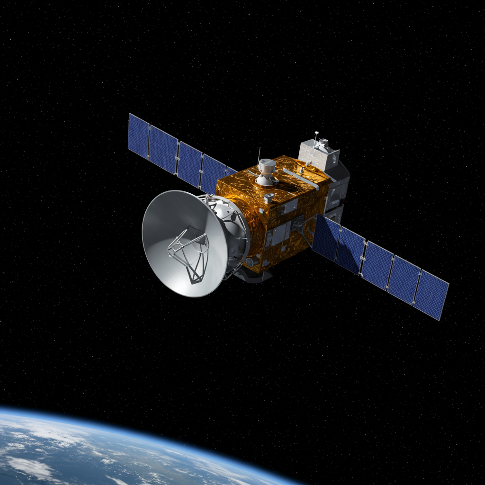

THURAYA
Fecha de lanzamiento: Thuraya 1 - 21 de octubre de 2000
Agencia o país: Thuraya Telecommunications Company / Emiratos Árabes Unidos
Objetivo
Proveer servicios de telefonía satelital y comunicaciones móviles en regiones remotas. Thuraya fue diseñado para cubrir áreas extensas en Europa, África, Asia y Oriente Medio con telefonía móvil directa vía satélite.
Actividad y evolución
El sistema Thuraya incluye varios satélites geoestacionarios (Thuraya 1, 2, 3) con una red de estaciones terrestres y terminales portátiles. Ha evolucionado para incluir servicios de datos, banda ancha satelital y dispositivos híbridos GSM-satélite.
Estado actual
Activo. Thuraya continúa ofreciendo servicios comerciales a usuarios en más de 160 países, con planes de expansión y modernización (Thuraya 4-NGS). Es uno de los principales operadores de comunicaciones móviles satelitales del mundo.
⬅ Volver al Archivo de Satélites